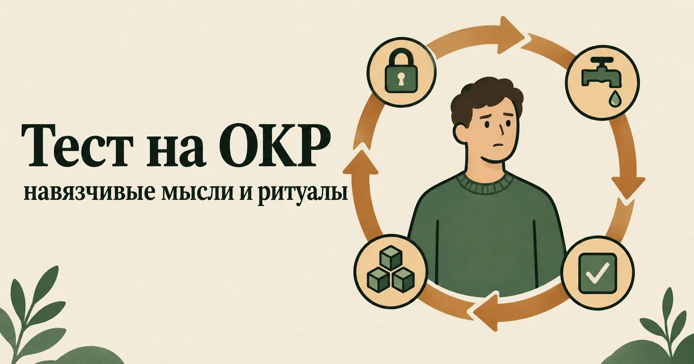

Тест на ОКР: есть ли у вас признаки навязчивостей
Обновлено: 16.09.2026 · 3 минуты на прохождение
Это самопроверка на признаки обсессивно-компульсивного расстройства: пятнадцать вопросов о навязчивых мыслях, ритуалах и о том, сколько места они занимают в вашей жизни. Результат — от 0 до 45 баллов и разбор, чем навязчивости отличаются от обычной аккуратности и когда с ними стоит идти к специалисту. Бесплатно, без регистрации, ответы остаются в вашем браузере.

Что с этим делать дальше. Балл — не диагноз, а точка отсчёта: смысл он приобретает в динамике, когда видно, растёт он или падает. В приложении AI Therapist есть дневник состояния, упражнения на основе приёмов КПТ и разговор с ИИ-психологом — можно пройти шкалу повторно через пару недель и сравнить.
Что проверяет этот тест
ОКР складывается из двух частей, и тест спрашивает про обе. Обсессии — это навязчивые мысли, образы или побуждения: они приходят против воли, пугают или вызывают отвращение и не уходят, сколько их ни отгоняй. Компульсии — действия, которые человек выполняет, чтобы снять вызванную ими тревогу: мыть, проверять, пересчитывать, выравнивать, мысленно проговаривать.
Вопросы собраны в четыре группы и идут вперемешку:
- Навязчивые мысли — о заражении, вреде, «неправильности», на запретные темы.
- Явные ритуалы — мытьё, проверки, повторения, выравнивание.
- Скрытые ритуалы и избегание — мысленное «перебивание» плохих мыслей, поиск подтверждений у близких и в интернете, обход ситуаций, которые запускают тревогу. Со стороны их не видно, но они держат круг так же прочно, как мытьё рук.
- Цена — сколько времени уходит на мысли и ритуалы, что из-за них срывается, насколько под них подстраиваются близкие.
Последняя группа важнее, чем кажется. Навязчивые мысли в той или иной форме бывают почти у всех людей: так устроен мозг. Расстройством они становятся не из-за содержания, а когда отнимают много времени, сильно мучают или мешают жить.
Расшифровка результата
Каждый ответ стоит от 0 до 3 баллов, сумма — от 0 до 45. Вопросы составлены нами, поэтому границы уровней заданы по смыслу пунктов, а не по статистике на больших выборках. Это ориентир, а не диагностический порог.
| Баллы | Уровень | Что это обычно значит |
|---|---|---|
| 0–10 | Навязчивостей почти нет | Отдельные «проверю ещё раз» бывают, но не тревожат и не отнимают времени |
| 11–21 | Отдельные навязчивости | Некоторые мысли и привычки цепляются, но жизнь под них пока не перестроена |
| 22–32 | Выраженные навязчивости | Мысли и ритуалы заметно забирают время и силы — стоит обсудить это со специалистом |
| 33–45 | Навязчивости сильно мешают жить | Много признаков, похожих на ОКР, и заметная цена в повседневной жизни — нужна очная консультация |
Посмотрите отдельно на последние четыре вопроса — о времени, сорванных делах, тревоге при помехе ритуалу и о том, подстраиваются ли под вас близкие. Если там стоят «часто» и «почти постоянно», это весомее общей суммы: даже при среднем балле навязчивости уже обходятся вам дорого.
Что похоже на ОКР, но им не является
Любовь к порядку и перфекционизм. Человек, которому нравится, когда всё разложено, получает от порядка удовольствие. Человек с ОКР выравнивает вещи, чтобы унять напряжение, и облегчение длится недолго. Разница не в поведении, а в том, приносит ли оно радость или только на время снимает страх.
Обсессивно-компульсивное расстройство личности. Несмотря на похожее название, это другое: стойкая установка на контроль, правила и безупречность, которую сам человек обычно считает правильной. При ОКР мысли, как правило, переживаются как чужие и мучительные.
Тревожное беспокойство. При генерализованной тревоге человек переживает о реальных делах — деньгах, здоровье, работе. Навязчивые мысли при ОКР чаще нелепы или пугающи по содержанию и сопровождаются ритуалом. Если беспокойство о жизненных вопросах ближе к вашей ситуации, пройдите тест на постоянное беспокойство или тест на тревожность.
Тики. Им не предшествует мысль, которую нужно «нейтрализовать», — это отдельная область неврологии и психиатрии.
Если вас пугают мысли о вреде
Один из самых мучительных видов навязчивостей — мысли о том, что вы можете навредить близкому, ребёнку, случайному прохожему. Люди с такими мыслями часто молчат годами: боятся, что их сочтут опасными.
При ОКР эти мысли вызывают ужас именно потому, что противоречат желаниям человека. Страх перед мыслью и есть признак того, что вы этого не хотите. Специалисты хорошо знают этот вид навязчивостей, и рассказать о нём на приёме безопасно. Подробно об этом — в статье об ОКР, его видах и лечении.
Другая ситуация — если мысли о вреде не пугают, а притягивают, есть желание или план. Это уже не навязчивость, и здесь нужна помощь сразу: номера телефонов указаны под тестом.
Что делать с результатом
ОКР хорошо поддаётся лечению. Основной психологический метод — когнитивно-поведенческая терапия с экспозицией и предотвращением ритуала: человек постепенно встречается с тем, что запускает тревогу, и учится не выполнять ритуал. Второй путь — лекарства, которые назначает психиатр; при выраженном ОКР их часто сочетают с терапией.
- Заметьте свои скрытые ритуалы. Поиск подтверждений в интернете, расспросы близких, мысленное «проговаривание» — тоже ритуалы. Их трудно увидеть, и именно они часто держат круг.
- Не спорьте с навязчивой мыслью. Попытка доказать себе, что мысль неправда, — ещё один способ получить успокоение, после которого нужна следующая порция. Мысль можно заметить и назвать: «это навязчивость», — без разбора по существу.
- Не отменяйте ритуалы резко и в одиночку. Постепенная работа с ритуалами — сердцевина лечения, но делать её лучше по плану со специалистом: самодельные запреты легко превращаются в новый ритуал.
- Расскажите близким, как устроен круг. Когда семья отвечает на одни и те же вопросы и соблюдает правила человека с ОКР, ей кажется, что это помощь. На деле такое подстраивание поддерживает навязчивости — но менять его стоит по договорённости, а не внезапным отказом.
- Разведите ОКР и обычные навязчивые мысли. Если мысли цепляются, а ритуалов почти нет, прочитайте разбор о том, как избавиться от навязчивых мыслей.
Когда обратиться к специалисту
- на мысли и ритуалы уходит много времени — час в день и больше;
- из-за них вы опаздываете, отказываетесь от планов, не можете работать или учиться;
- вы избегаете всё больше мест, людей или вещей;
- близкие вынуждены жить по вашим правилам;
- вместе с навязчивостями пришли подавленность, бессонница или мысли, что жить так больше нельзя.
ОКР лечат психиатры и психотерапевты — в том числе бесплатно, по полису ОМС. Как туда попасть и почему визит к психиатру не означает «постановку на учёт», разобрано в справочнике бесплатной помощи.
Навязчивые мысли трудно рассказать даже близким: кажется, что они скажут о вас что-то плохое. Здесь можно проговорить их без осуждения — анонимно и в любое время.
Частые вопросы
Можно ли по тесту узнать, есть ли у меня ОКР?
Нет. Тест показывает, насколько у вас выражены навязчивые мысли и ритуалы и сколько места они занимают в жизни, но диагноз ставит только врач на очной консультации. Высокий балл — повод обратиться к психиатру или психотерапевту, а низкий не гарантирует, что всё в порядке, если вас что-то мучает.
Навязчивые мысли — это уже ОКР?
Не обязательно. Странные или пугающие мысли время от времени приходят почти ко всем. Об ОКР говорят, когда такие мысли повторяются, вызывают сильную тревогу, человек выполняет ритуалы, чтобы её снять, и на это уходит много времени или страдает повседневная жизнь.
Чем ОКР отличается от любви к порядку?
Любовь к порядку приносит удовольствие, и уборку можно спокойно отложить. При ОКР порядок и ритуалы нужны, чтобы унять тревогу или страх, облегчение длится недолго, а невозможность выполнить ритуал вызывает сильное напряжение.
Насколько этому тесту можно доверять?
Это самопроверка, а не валидированная шкала: вопросы составлены нами по описанию ОКР в международной классификации болезней, а границы уровней заданы по смыслу, без сравнения с населением. Результат стоит читать как повод присмотреться к себе и обсудить его со специалистом, а не как вывод о себе.
Материал подготовлен командой AI Therapist. Вопросы самопроверки составлены нами на основе описания обсессивно-компульсивного расстройства в МКБ-11 и клинических рекомендациях. Это не валидированная диагностическая шкала: она не сравнивает вас с населением, не ставит диагноз и не заменяет консультацию специалиста.
Источники: МКБ-11, ВОЗ — 6B20 «Обсессивно-компульсивное расстройство», Клинические рекомендации Минздрава РФ «Обсессивно-компульсивное расстройство», 2025, NICE CG31 — Obsessive-compulsive disorder and body dysmorphic disorder, NHS — Obsessive compulsive disorder (OCD), NIMH — Obsessive-Compulsive Disorder.
Кто отвечает за содержание сайта и по каким правилам мы готовим материалы — на странице о проекте.